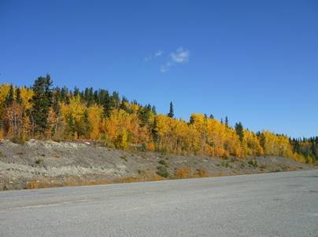
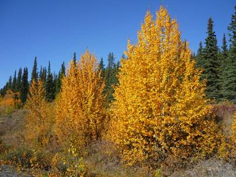
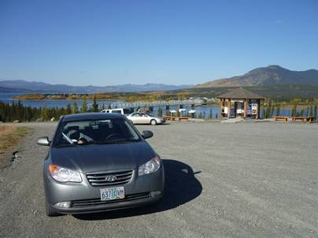
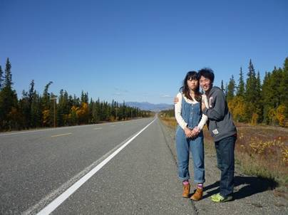
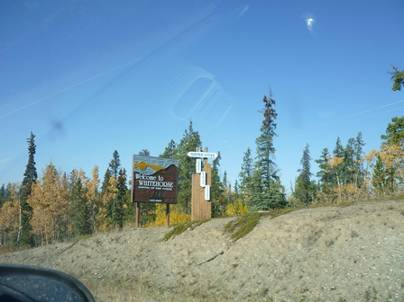
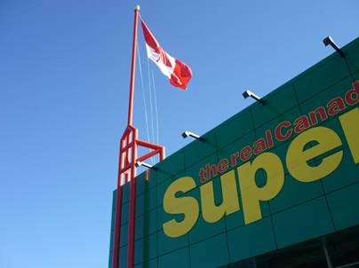
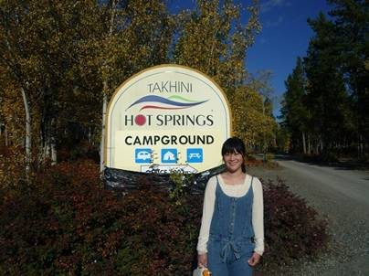

１２日目(9/15)～極北の温泉～
LaketoWhitehorse(TakhiniHot Springs)


ユーコン準州の州都、ホワイトホースを目指して出発。今日も昨日に引き続き、天気が良い。




見渡す限り、人の手が全く入っていないような雄大な景色。針葉樹の森の向こうには形の良い山があった。そしてその森の中をゆったりと流れる川。紅葉の色彩はさらに鮮やかさを増し、オレンジ色に輝く木々は見とれてしまうほど。


テスリンの街の手前では大きな川を渡る。紅葉に囲まれた風光明媚な場所だった。

テスリンからさらに車を走らせたところでどこまでも続く直線道路の写真を撮ろうと思い、道路わきに車を止め、三脚を出してカメラを固定した。そのとき、不意に尿意を催したので寝ているまおを車内に残し、道路わきの針葉樹の樹林帯に少しだけ入って用を足した。数分して戻ってくると、まおが車外に出て泣いている。起きたときに誰もおらず、外に三脚だけが残されていたので僕がエルクか熊食べられたと思い、恐怖で泣いてしまったのだと言う。これからは紛らわしいことをしないよう注意を払わねばならない。


ホワイトホースに到着。ビルが立ち並ぶ久しぶりの都会に安堵する。

市街の大型スーパーで買出し。この先今日も含め野宿する日が増え、またお店もあまりないと思ったので纏め買い。カレーライスを作ろうと思い、ルーを探し回ってもなかなか見つからない。しばらく探すうち、日本のカレールーを見つけた。久しぶりに日本の味が楽しめると思うとワクワクする。このグリコのカレールーの周りにはわさびやポッキーなど、他の日本製品も売られていた。普通のお酢は置いてないのにすし酢は置いてあった。


ホワイトホースの市街から車で３０分程の郊外にタキーニ温泉はある。温泉につかりながらオーロラを見てやろうという魂胆だった。そして温泉の敷地内にはキャンプ場があり、今晩はここでテントを張って宿泊する。今日のキャンプ場も広く、白樺のような樹林に囲まれたのどかな場所だった。カナダはキャンピングカーで旅する人が多く、ここも含めこれまでのキャンプ場ではそういう人のために、コンセント付のキャンプ場を設けていた。一晩中エンジンをかけているわけにもいかないので、キャンピングカーの人は車からケーブルを出し、そのコンセントから電気をもらって空調をつけたり、調理を行ったりするのだ。まさに家ごと運んでしまう感覚で、日本でも見ないことは無いが、カナダでは本当にキャンピングカー旅行客の数が多かった。
今晩はクリームシチューのようなものを昼に買ったもので作ろうとしたが、調理に失敗して焦がしてしまい、ひどい味になった。全て火力をマックスにしてしまった自分の責任だ。
食後は気を取り直して温泉に入った。水着を着るので男女混浴で、何時間でも入って入れそうな低温の場所と、日本の温泉のような高温の場所があった。高温の場所にずっといるとのぼせてしまうので二つの場所を行き来しながら極北の温泉を楽しみ、オーロラが出てくるのを待った。しかし、かなり高緯度まで来てしまったのでその分昼の時間も長くなる。夜の９時過ぎまで明るかったこともあって、結局オーロラを見ることはできなかった。たとえ出ていたとしても、周囲の照明の光が少し邪魔になっていたと思う。
テントに戻ってからも何度か夜空を眺めてみたものの、オーロラは出てきてくれなかった。